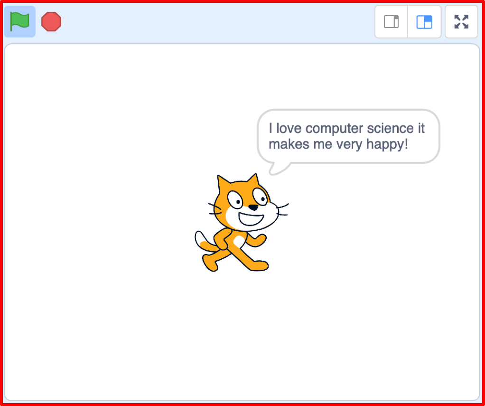

A Virtual LOLcat in Scratch
Table of Contents
Grey overlay
Pink
Green
Blue
Cream
Liliac
Purple
Yellow
1 An introduction to Scratch
Scratch is a programming language that can be used to make small programs and games. Above is the Graphical User Interface (GUI) for Scratch. A GUI is how the a user interacts with software.
Learn It
- The Scratch GUI is split into 4 sections
- These are listed below
- The key areas are:
- The Blocks Palette
- The Scripts Area
- The Stage
- The Sprite List
Code It
If you've used Scratch before and already have an account, then you can skip this section.
- Goto THIS LINK to the Scratch website
- Click on the Join Scratch button in the menu bar.


- Fill in the details required. Be sure to pick a username and password you will remember.
- You may need to use your personal email address when you register.
- Once you are logged in, click on the Create button in the menu bar.

- Now we can name our file. Call it Practice Scripts.

- Scratch works by dragging blocks of code from the blocks palate into the script area. These blocks then can be stacked to create scripts.
- Let's make a simple Script. From the Blocks Palate, choose Events.

- Now, click and drag the following block on to the Scripts Area.
- Next choose the Looks scripts from the menu.
- Click and drag the say Hello! for 2 secs block and snap it to the When flag clicked block.
Run It
- To run our Scratch script, you just need to click on the Green Flag in the Stage area.

Code It
- Now let's try something a little more complicated.
- Delete your current script by dragging it back to the Blocks Pallette.
- We're going to make the cat grow. You'll need to search through the Blocks Pallette to find the appropriate blocks, and build the script as it's shown below.
- Now click on the Green Flag in the Stage area to run your code.

Learn It: Video Tutorial
Video Tutorial - You'll upload your completed work to www.BourneToLearncom for marking. The video tutorial below explains how to do it:
2 Badge It - Basic Scripts
Learning strand: Programming and Development
Badge It: Cat Talk
Silver - Cat Talk
- After you have completed the code in Scratch as shown above, try changing what the cat says and how long it says it for.
- Follow the video tutorial on how to upload your work and upload your work to www.bournetolearn.com.

Badge It: Cat Shrink!
Gold - Cat Shrinking
- Try to change the script so that after the cat has grown, it says "I'm Shrinking!" and then returns to it's regular size.
- HINT: You can use negative numbers in Scratch
Badge It: Cat Circles
Platinum - Cat moving in circles
- To get your platinum badge, you need to make the cat move around in a large circle.
- You'll probably want to look into using a loop to achieve this.